01
Interior & exterior painting
Walls, ceilings, trim and doors inside; siding, brick and trim outside. From one room to the whole house.
Bartonville, TX project · living roomChoose a finish
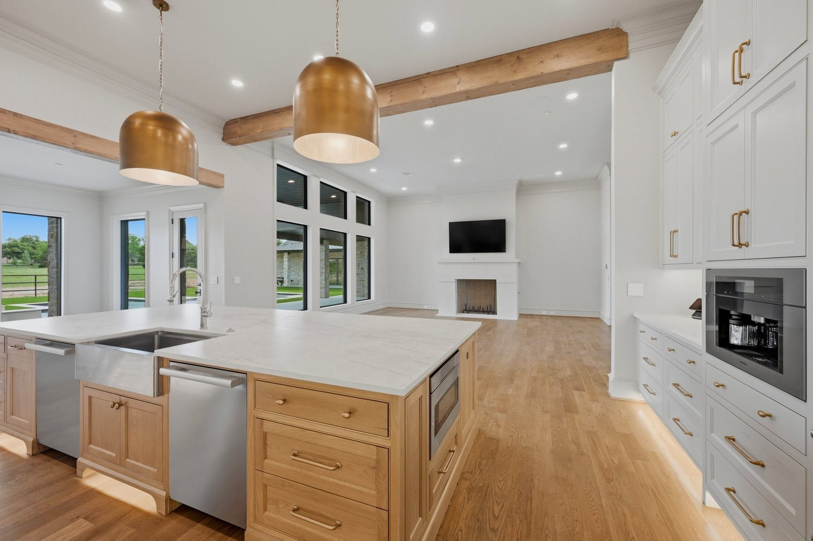
Interior and exterior painting, wallpaper removal, hand textures, fence weatherproofing and deck staining for homes in Dallas and across the DFW area.
4.7 stars on GoogleBartonville, TX project · kitchen
A completed project the business posted from Bartonville, TX: a stone-and-brick ranch home, a white kitchen with a long oak island, and a bright living room with tall black windows. Outside and in, one finished house.
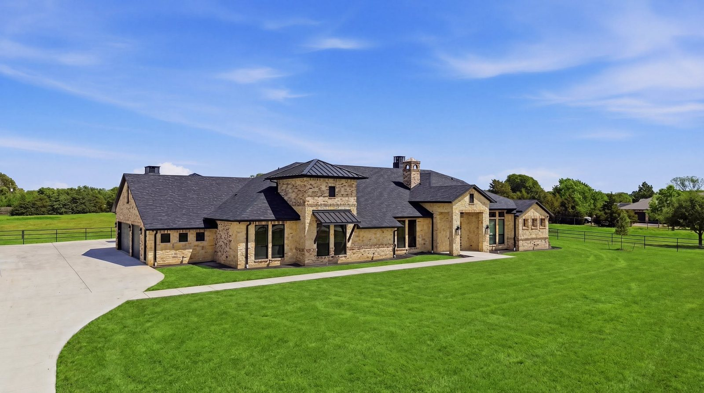
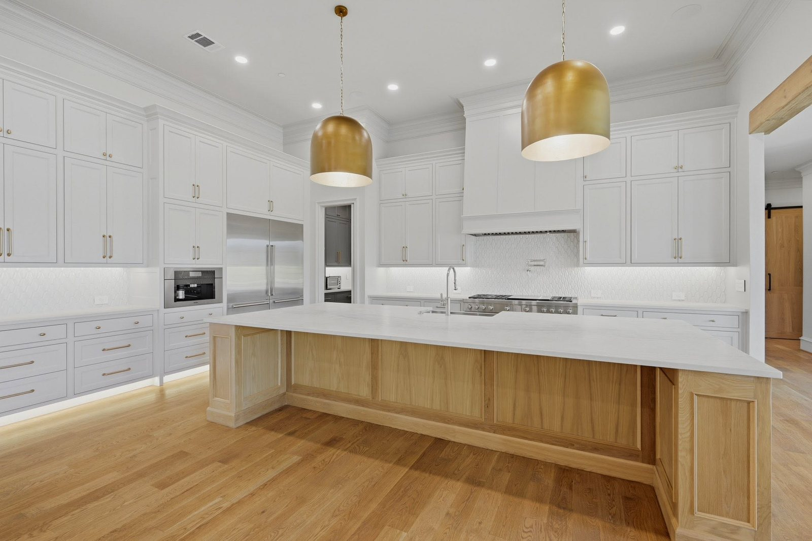
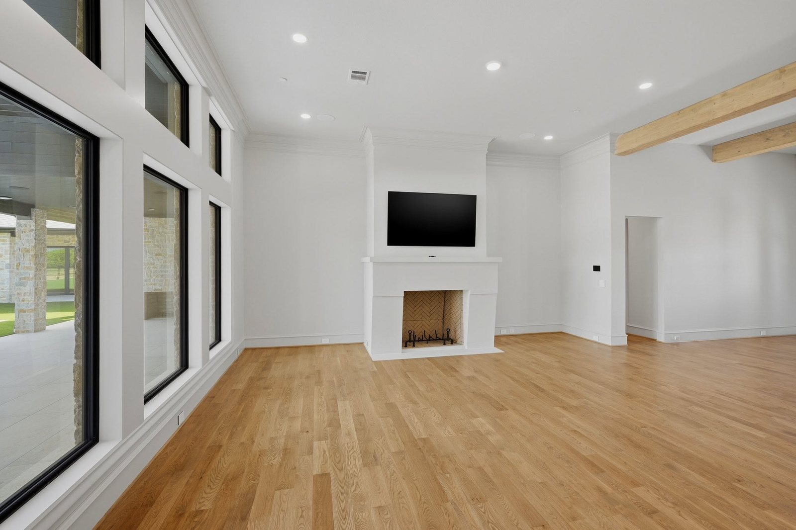
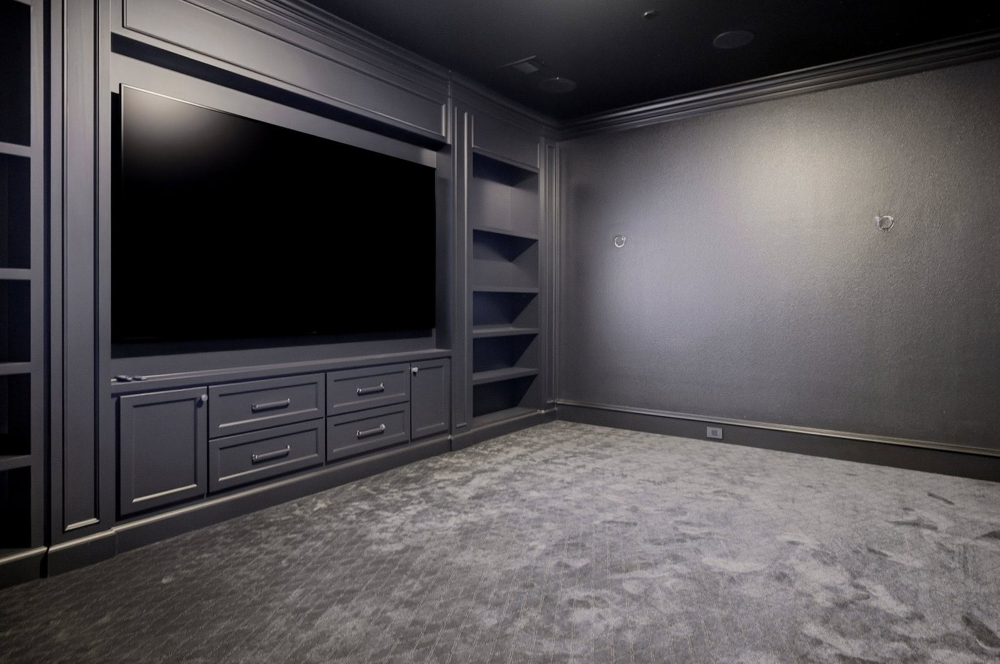
One charcoal on the walls, the ceiling and every built-in, so the colour wraps the whole room and the screen is the only thing that glows.
Dark colours are honest: they show lap marks, patches and uneven sheen far more than white does. That is why the prep and the choice of finish matter more in a room like this.
Same wall, same colour. The only change is how much light bounces straight back.
These are the services painted on the side of the Skilled Painting van, word for word. Pick the one that fits, or send photos and ask.
Walls, ceilings, trim and doors inside; siding, brick and trim outside. From one room to the whole house.
Bartonville, TX project · living room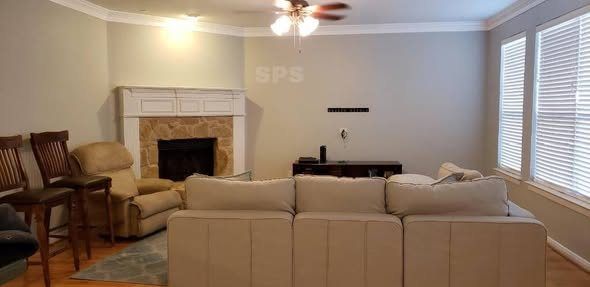
Old paper off, the wall made ready, so the new colour goes onto a clean surface.
Their photo · family room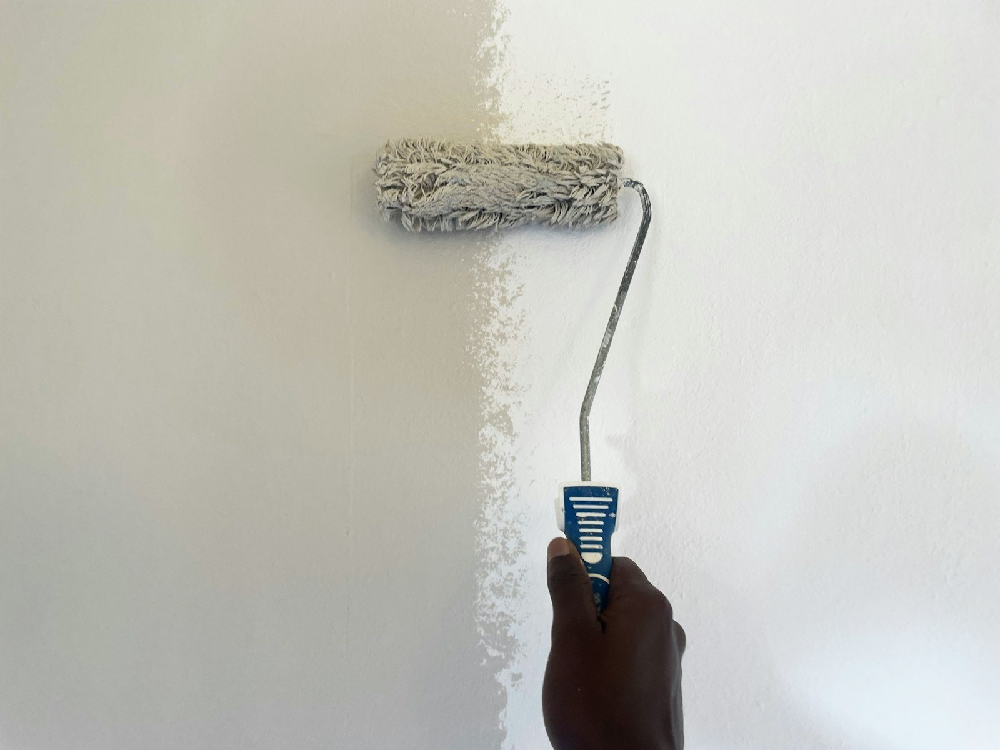
Wall texture applied by hand: blend a patch into what is already there, or give a wall a finish of its own.
Illustrative stock photo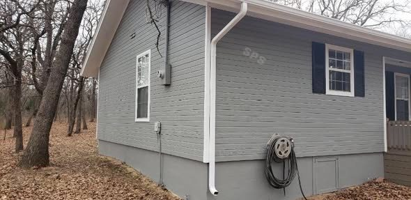
A protective coat for wood fences that take the full Texas sun, wind and summer storms.
Their photo · grey siding, wooded lot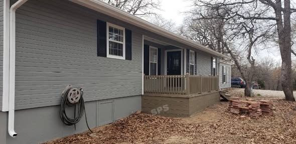
Stain for decks and patios so the wood keeps its colour outdoors, season after season.
Their photo · back deckInterior & Exterior Painting
Wall Paper Removal
Hand Textures
Fence Weather Proofing
Staining Decks / Patios
As lettered on the vanShiplap ceilings, built-ins, cabinet doors and casings. The woodwork that catches the light is where a glossier finish earns its place, and where every brush mark would show.
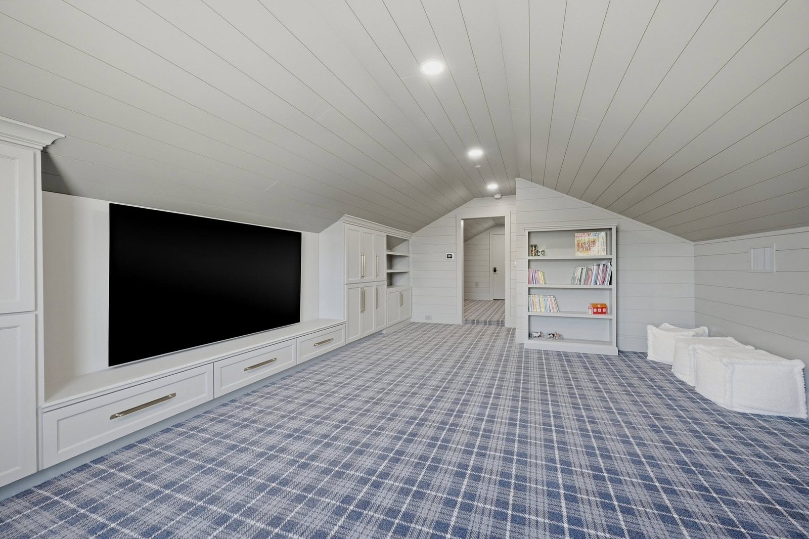
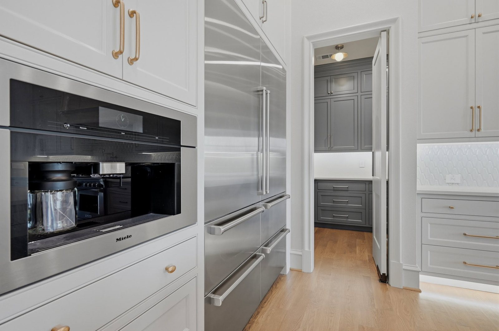
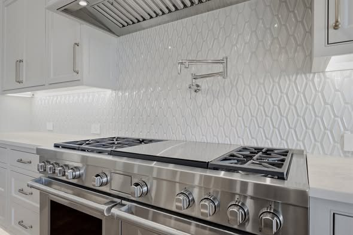
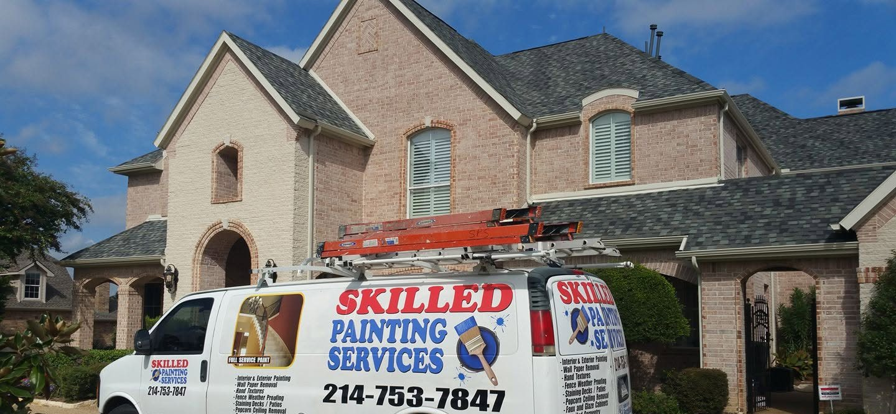
The Skilled Painting vanWhite van, ladders on the rack, the red and blue sign on the side and the number you can call: (214) 753-7847.
Painting homes in
Across Dallas and the wider DFW area, out to completed projects like the one in Bartonville.
The flatter the finish, the more it hides; the glossier the finish, the easier it wipes clean and the more it shows. Flat and eggshell suit most walls and ceilings, satin suits busier rooms, and semi-gloss or gloss suit trim, doors and cabinets. Tell us about the room and we can talk it through.
Yes. Wallpaper removal is one of the services lettered on the van. Send a photo of the wall and roughly how big the room is.
Yes, hand textures are on the list. A close-up photo of the wall, taken with light coming from the side, shows the existing texture most clearly.
Photos of the rooms or the outside of the house, your city or ZIP, and what you would like done. One wide shot per room plus a close-up of any problem area is plenty.